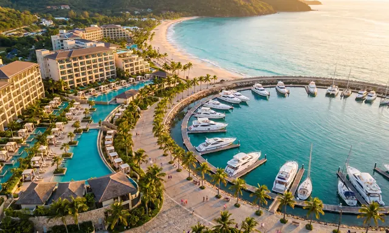

Destinations that compete globally.
We support governments and developers in building competitive, investable destination strategies — integrating demand forecasting, product development and positioning into coherent visitor-economy frameworks.

Tourism development strategy turns a destination's natural, cultural and heritage assets into a competitive, investable visitor economy. In the markets where Heirstone works, the constraint is rarely ambition — it is translating that ambition into demand evidence, investable product and governance that survives a change of minister.
A destination competes for a finite pool of internationally mobile visitors and capital. Winning that competition requires positioning grounded in what genuinely differentiates the destination for specific source markets and segments — not the generic language of "untapped potential" that every competitor uses.
Governments, tourism boards and planning authorities designing national or destination strategies; and developers and investors evaluating hospitality and mixed-use opportunities in emerging destinations.
A tourism development strategy defines how a country or destination will grow its visitor economy — covering demand forecasting, positioning, product development, investment attraction and governance — with the aim of guiding both public investment and private capital mobilisation.
By resolving the commercial and legal structure — land access, targeted incentives and investor-ready site packaging — before investors are approached, and by using flagship anchor projects to prove the market and de-risk it for subsequent private entrants.
A master plan covers the full investment case — demand, product, land, capital and governance; destination marketing focuses on brand and promotion, and should follow from the master plan's positioning rather than replace it.
Speak directly with a senior partner about your project, asset or programme.
Get in Touch